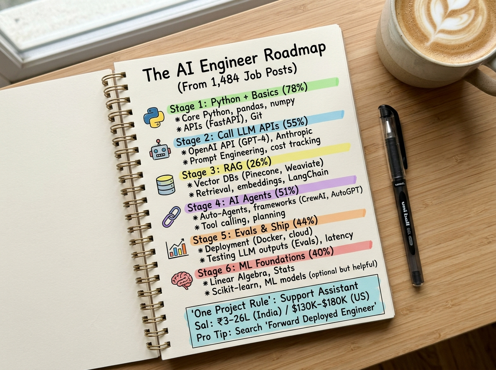
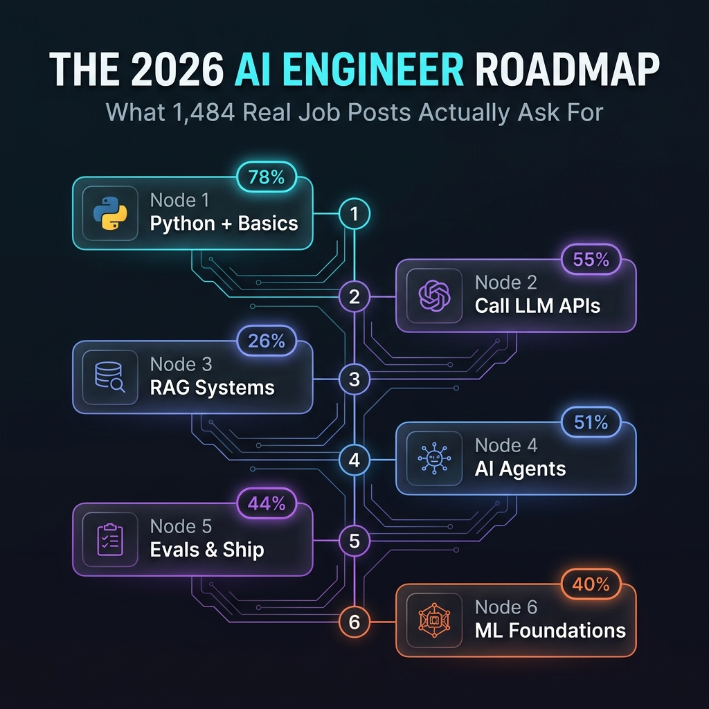
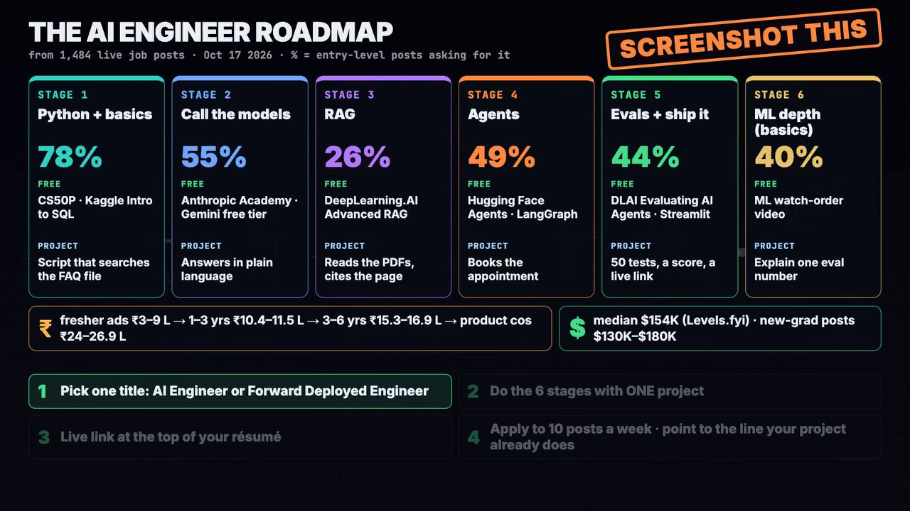

How to Become an AI Engineer: The Roadmap Real Job Posts Actually Ask For
An empirical breakdown of 1,484 live job listings from OpenAI, Anthropic, Databricks, Sierra, and Notion. What works, what's dead, and how to get hired in 2026.
The Executive Summary: A comprehensive audit of 1,484 live AI Engineer job postings shows the industry has shifted away from toy wrappers and buzzwords. Standalone "Prompt Engineering" is dead (appearing in only 9.9% of posts), while AI Agents that autonomously use tools appear in 51% of global posts and 76% of entry-level Indian postings. Here is the verified blueprint to transition into AI Engineering.

The Noise in AI Careers: What Real Data Tells Us
Open any job board today—whether it is LinkedIn, Naukri, or Greenhouse—and type in "AI Engineer." Every single posting seems to demand an entirely contradictory grab bag of skills: one asks for low-level CUDA kernels, another wants LangChain scripts, a third demands five years of PyTorch experience, and a fourth asks for a "prompt whisperer."
To cut through the noise, researchers at Hyperautomation Labs recently conducted an empirical audit of 1,484 live AI Engineering job postings across primary hiring boards (Greenhouse, Lever, Ashby) on October 17, 2026. The dataset included 960 postings in the United States and 97 in India, spanning foundational AI labs (OpenAI, Anthropic, Databricks), fast-growing agent startups (Sierra, Sarvam AI), and tech enterprises (Coinbase, Notion).
When role descriptions were stripped of standard corporate boilerplate and parsed for actual technical requirements, the findings destroyed several prevalent AI career myths.
Fewer than 1 in 10 posts mention prompt engineering as a core competency. Writing system prompts is considered basic literacy, not an employable skill on its own.
Over half of all postings—and 76% of Indian entry-level roles—explicitly evaluate candidates on building autonomous agents that connect LLMs to tools, APIs, and databases.
The Secret Title: "Forward Deployed Engineer"
One of the highest-leverage insights from the data is how companies label these roles. Out of 1,484 analyzed listings, 355 postings (~23.9%, or nearly 1 in 4) were titled "Forward Deployed Engineer" (FDE) or "Forward Deployed AI Engineer."
An FDE is an AI engineer who operates on the frontier between product engineering and enterprise deployment. They take state-of-the-art foundation models and build custom integrations, agents, and pipelines for high-value customers. Because most job hunters strictly search for "AI Engineer" or "Machine Learning Engineer," FDE postings receive a fraction of the applicants despite paying top-tier compensation.

The 6-Stage Roadmap (With Free Learning Resources)
The 1,484 job posts converge on a structured, sequential 6-stage progression. Here is what each stage demands, alongside verified free resources and concrete deliverables:
Stage 1: Python Core & Software Fundamentals
78% of PostingsWriting clean, modular Python, asynchronous programming, file I/O, SQL database schema design, and version control with Git.
Project Milestone: A standalone Python CLI tool that parses and searches an internal company FAQ file without AI.
Stage 2: Calling Foundation LLM APIs
55% of PostingsUnderstanding temperature, context windows, structured JSON outputs, function calling signatures, streaming responses, and token cost budgeting across Claude 3.5, Gemini 1.5/2.0, and GPT-4o.
Project Milestone: Upgrade the FAQ tool into an interactive conversational helper providing natural language answers with JSON schema constraints.
Stage 3: Enterprise RAG (Retrieval-Augmented Generation)
26% of PostingsChunking strategies, dense embeddings, vector indexing (Chroma, Qdrant, pgvector), hybrid keyword+semantic search, re-ranking with Cohere, and citation grounding.
Project Milestone: Enable the assistant to ingest 50-page enterprise PDF policy manuals and answer queries while citing the exact paragraph and page number.
Stage 4: Autonomous Multi-Tool Agents
49% Global · 76% IndiaTool definition, ReAct loops, planning, stateful execution graphs with cyclical routing (LangGraph, CrewAI, AutoGen), error recovery, and human-in-the-loop validation.
Project Milestone: Equip your assistant with tools: checking calendar availability via Google Calendar API, sending confirmation emails, and creating database entries autonomously.
Stage 5: Evals, Guardrails & Deployment
44% of PostingsLLM-as-a-Judge evaluation pipelines (Ragas, DeepEval), hallucination testing, latency budgeting, Docker containerization, and shipping an accessible frontend via Streamlit, FastAPI, or Next.js.
Project Milestone: Build a test suite of 50 edge-case inputs with an automated hallucination score and deploy the application live with a public URL.
Stage 6: ML Depth (Practical Foundations Only)
40% of PostingsYou do not need to train transformers from scratch. You need enough math and machine learning literacy to understand embedding cosine distance, precision vs. recall in search, and parameter quantization (GGUF, AWQ, FP8).
Project Milestone: Be able to articulately justify why a model failed an evaluation metric and explain how changing top-p or temperature shifts the output distribution.

The Golden Strategy: "The One-Project Rule"
The fatal mistake most candidates make is building six disconnected, unfinished GitHub repositories: a Titanic classifier, a generic LangChain PDF summarizer, an automated Twitter bot, and a calculator. Recruiters look at these for five seconds and close the tab.
Instead, follow the One-Project Rule:
- Pick a real domain problem for an actual business (e.g., "Intelligent Patient Support & Appointment Assistant for a Dental Clinic").
- In Stage 1, write clean Python code to query the clinic's raw pricing and hours file.
- In Stage 2, connect it to the Gemini or Claude API to respond to patient inquiries in warm, natural English.
- In Stage 3, add RAG over complex treatment insurance documents, outputting exact copay policies with page references.
- In Stage 4, transform it into a LangGraph agent that can check dentist availability, reserve appointment slots in SQLite, and send SMS confirmations.
- In Stage 5, write 50 automated adversarial test cases (handling cancellations, urgent medical disclaimers, hallucination prevention) and host it live on Streamlit or Vercel.
- In Stage 6, benchmark latency vs. cost (e.g., routing simple questions to a lightweight model and complex insurance questions to Claude Sonnet).
When you walk into an interview with one battle-tested, deployed application that covers every stage of the engineering lifecycle, you instantly separate yourself from 99% of applicants.
2026 Compensation Landscape: What the Data Shows
| Experience Level / Geography | Compensation Range | Data Benchmark Source |
|---|---|---|
| India: Entry Level / Fresher (0–2 yrs) | ₹3.0 – ₹9.0 LPA | Naukri JobSpeak (Sept 2026) |
| India: Mid-Level (1–3 yrs) | ₹10.4 – ₹11.5 LPA | AmbitionBox CTC Reports |
| India: Senior (3–6 yrs) | ₹15.3 – ₹16.9 LPA | AmbitionBox CTC Reports |
| India: Product Companies / AI Labs | ₹24.0 – ₹27.0+ LPA | Coinbase (₹44.1L), Cartesia FDE (₹70–90L) |
| United States: New-Grad Base | $130,000 – $180,000 | Notion ($130-150K), Sierra ($150-180K + Equity) |
| United States: Overall Median Total Comp | $154,000 / year | Levels.fyi Verified Submissions |
Action Plan: 4 Rules to Get Hired Today
- Pick One Title: Stop putting "Aspiring Data Scientist / AI Enthusiast / Prompt Engineer" in your bio. Use "AI Engineer" or "Forward Deployed Engineer."
- Build One Evolving Project: Don't start another tutorial until you have finished all six stages of your primary application.
- Put the Live Link at the Very Top of Your Résumé: Recruiters spend an average of 7 seconds on a résumé. If your header has a bold clickable link to a running, polished application, you immediately bypass standard automated filtering.
- Apply Strategically: Target 10 specific postings a week. In your cover note or LinkedIn message, point directly to the exact feature in your live demo that solves the problem mentioned in their job description.
Verified References & External Data Sources
- Original Reel & Dataset Source: Hyperautomation Labs Facebook Reel: The AI Engineer Roadmap (1,484 Live Job Posts Analysis, Oct 17, 2026).
- Job Growth Benchmark: Naukri JobSpeak Index (September 2026 Data: "AI/ML roles continued to record growth, rising 20% YOY").
- Salary & Compensation Data: AmbitionBox AI Engineer Salary Band India • Levels.fyi AI Engineer Global Compensation.
- Official Frameworks: LangGraph by LangChain • Hugging Face Transformers & Agents • Anthropic API Cookbook.
Connect & Collaborate
I build open-source AI frameworks, assistive technologies, and robotics systems. Connect with me on LinkedIn or explore my flagship GitHub repositories.